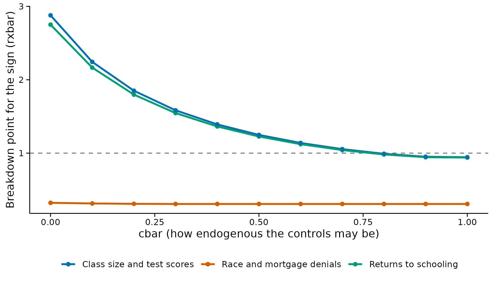

Each of the three studies below asks a causal question with a regression, and each has an omitted variable that a referee would raise. They come from labour economics, the economics of discrimination, and the economics of education. All three data sets ship with the AER package, so every number here can be reproduced.
Each study follows the same recipe:
- Write the regression and choose the calibration
covariates (
compare): the observed variables whose relation to the treatment is a yardstick for the omitted one. - Compute the breakdown point for the sign of the
coefficient. This is how strong selection on unobservables has to be,
relative to selection on the calibration covariates, before the sign can
flip. Compute it for exogenous controls (
cbar = 0) and for arbitrarily endogenous ones (cbar = 1). - Read it against the reference values from
calibrate_rho(), the same ratio computed for each calibration covariate in turn. - Report Oster’s next to it, and say which assumption each number rests on.
The three studies end with three different verdicts, and the point is how the numbers produce them. Interpreting results explains each quantity in detail on simulated data, where the truth is known.
1. Returns to schooling
How much does a year of schooling raise wages? The classic worry is ability: people who stay in school longer may also earn more for reasons that have nothing to do with schooling. Ability is not in the data.
The CPS1985 data (Berndt 1991) has 534 workers from the
1985 Current Population Survey. We regress log wages on years of
education, with experience and demographic controls. Occupation and
sector are left out on purpose, because they are partly outcomes of
schooling; controlling for them would absorb part of the effect we want
to measure.
data("CPS1985", package = "AER")
CPS1985$lwage <- log(CPS1985$wage)
f_wage <- lwage ~ education + experience + I(experience^2) +
gender + ethnicity + union + married + region
w_wage <- c("experience", "gender", "ethnicity", "union", "married")The calibration covariates are the controls that plausibly share ability’s relation to schooling: experience, gender, ethnicity, union status and marital status. Region stays as a control but not as a yardstick.
wage_bk <- regsen_breakdown(f_wage, CPS1985, compare = w_wage,
cbar = seq(0, 1, 0.1))
wage_bnd <- regsen_bounds(f_wage, CPS1985, compare = w_wage, cbar = 1)
wage_rho <- calibrate_rho(f_wage, CPS1985, compare = w_wage)
wage_bp <- as.data.frame(wage_bk)
coef(wage_bnd)
#> short medium
#> 0.08982832 0.08644984
wage_bp[wage_bp$index %in% c(0, 0.5, 1), ]
#> index breakdown
#> 1 0.0 2.7505736
#> 6 0.5 1.2272157
#> 11 1.0 0.9398163
wage_rho
#> variable rho
#> 3 ethnicityhispanic 159.737372
#> 4 ethnicityother 34.651132
#> 1 experience 29.719853
#> 2 genderfemale 19.032037
#> 6 marriedyes 17.655960
#> 5 unionyes 7.029814A year of schooling is associated with wages about 8.6% higher (the coefficient is in log points). With exogenous controls, the positive sign survives until selection on unobservables is 275% as strong as selection on the five calibration covariates together. With endogenous controls the threshold falls to 94%.
The reference values set the scale. No calibration covariate exceeds 35% except the Hispanic indicator, at 160%, which describes 27 of the 534 workers. So even with endogenous controls, the omitted variable would have to predict schooling roughly as well as all the calibration covariates combined: far better than experience, gender, union status or marital status, and about as well as ethnicity does in this sample.
That is a precise statement of the debate rather than an end to it. Someone who believes ability predicts schooling more strongly than experience, gender, ethnicity, union status and marital status do together has a case that the sign is not identified. Someone who doubts it does not. The number tells both sides where the line is.
2. Race and mortgage denials
Do lenders deny mortgages to Black applicants more often than to
white applicants with the same credit profile? The HMDA
data, from the Boston Fed study of Munnell et al. (1996), has 2,380
applications with the credit variables the lender saw. The worry is that
lenders also saw things the data do not record, and that these are
related to race.
The outcome is a denial indicator, so this is a linear probability model. The calibration covariates are the credit variables, because the unrecorded information is more of the same kind: payment-to-income and housing-expense ratios, the loan-to-value ratio, consumer and mortgage credit history, public bad-credit records, and whether mortgage insurance was denied.
data("HMDA", package = "AER")
HMDA$deny01 <- as.numeric(HMDA$deny == "yes")
f_hmda <- deny01 ~ afam + pirat + hirat + lvrat + chist + mhist + phist +
insurance + selfemp + single + hschool + unemp + condomin
w_hmda <- c("pirat", "hirat", "lvrat", "chist", "mhist", "phist",
"insurance")
hmda_bk <- regsen_breakdown(f_hmda, HMDA, compare = w_hmda,
cbar = seq(0, 1, 0.1))
hmda_bnd <- regsen_bounds(f_hmda, HMDA, compare = w_hmda, cbar = 1)
hmda_rho <- calibrate_rho(f_hmda, HMDA, compare = w_hmda)
hmda_bp <- as.data.frame(hmda_bk)
coef(hmda_bnd)
#> short medium
#> 0.18963757 0.08484585
hmda_bp[hmda_bp$index %in% c(0, 0.5, 1), ]
#> index breakdown
#> 1 0.0 0.3232424
#> 6 0.5 0.3075730
#> 11 1.0 0.3075730
head(hmda_rho, 4)
#> variable rho
#> 8 chist6 57.71867
#> 12 phistyes 37.11112
#> 3 lvrat 36.19546
#> 6 chist4 31.51476Without controls, Black applicants are denied 19.0 percentage points more often. The credit variables cut the gap to 8.5 points, so observed credit differences already explain more than half of it. That is exactly the pattern that makes a remaining gap fragile: if the observed credit variables matter this much, the unobserved ones may as well.
The breakdown point puts a number on it. An omitted variable whose
relation to race is only 31% as strong as that of the observed credit
variables together is enough to remove the gap. Allowing the controls to
be endogenous barely matters here (32% with exogenous controls). Several
single credit variables have reference values above that threshold; the
worst consumer-credit category (chist6) alone is at 58%.
One more credit variable of that kind, left out of the data, could
account for the whole gap.
The same data through Oster’s
The conventional robustness check reads differently.
r2rel <- c(1.3, 1.6, 2)
hmda_osc <- regsen_breakdown(f_hmda, HMDA, compare = w_hmda,
analysis = "oster",
r2long = r2rel, r2long_type = "relative")
hmda_oea <- regsen_breakdown(f_hmda, HMDA, compare = w_hmda,
analysis = "oster",
r2long = 1.3, r2long_type = "relative",
beta = bnd_eq(0))
data.frame(r2long = paste0(r2rel, " x R2"),
sign_change = as.data.frame(hmda_osc)$breakdown)
#> r2long sign_change
#> 1 1.3 x R2 1.0000000
#> 2 1.6 x R2 1.0000000
#> 3 2 x R2 0.6526253
breakdown_point(hmda_oea, signed = TRUE)
#> [1] 2.0401At Oster’s rule of thumb, , the explain-away is 2.04, and the sign change point is capped at one: by the usual convention, the gap is robust. Setting to twice instead brings the sign change point down to 0.65.
The two analyses rest on different assumptions. Oster’s comfortable
number depends on
,
which limits how much of the outcome the omitted variable can explain.
The DMP breakdown point above leaves that unrestricted
(rybar = Inf) and does not assume the controls are
exogenous. A write-up should report both, and say which assumption
carries the conclusion. Here it is the cap on
.
3. Class size and test scores
Do smaller classes raise test scores? The CASchools data
(Stock and Watson) has 420 California school districts. The worry is
that districts with small classes differ in ways that also raise scores,
such as wealth or parental involvement. This is the second application
in the package’s R Journal article.
The average reading and mathematics score is regressed on the student-teacher ratio, with county fixed effects as controls. The English-learner share and the free-lunch share serve as calibration covariates, because they are proxies for the same disadvantage that the omitted variables would capture.
data("CASchools", package = "AER")
CASchools$score <- with(CASchools, (read + math) / 2)
CASchools$STR <- with(CASchools, students / teachers)
f_sch <- score ~ STR + english + lunch + county
w_sch <- c("english", "lunch")
sch_bk <- regsen_breakdown(f_sch, CASchools, compare = w_sch,
cbar = seq(0, 1, 0.1))
sch_bnd <- regsen_bounds(f_sch, CASchools, compare = w_sch, cbar = 1)
sch_rho <- calibrate_rho(f_sch, CASchools, compare = w_sch)
sch_bp <- as.data.frame(sch_bk)
coef(sch_bnd)
#> short medium
#> -1.1007930 -0.9010952
sch_bp[sch_bp$index %in% c(0, 0.5, 1), ]
#> index breakdown
#> 1 0.0 2.8779343
#> 6 0.5 1.2485656
#> 11 1.0 0.9446007
sch_rho
#> variable rho
#> 2 lunch 115.90557
#> 1 english 86.27713One more student per teacher is associated with a 0.90-point lower score. Here the assumption about the controls is decisive. With exogenous controls the negative sign survives until selection on unobservables is 288% as strong as selection on the two calibration covariates, far above either reference value. Once the controls are allowed to be endogenous, the threshold falls to 94%, between the English-learner share (86%) and the free-lunch share (116%).
So whether the conclusion is robust depends on a question the regression cannot answer: are the controls themselves correlated with the omitted variables? If county effects and the two shares are clean, the finding is robust. If they are not, an omitted variable no more important for class size than the free-lunch share could reverse the sign.
The three side by side
both <- rbind(
data.frame(study = "Returns to schooling", wage_bp),
data.frame(study = "Race and mortgage denials", hmda_bp),
data.frame(study = "Class size and test scores", sch_bp)
)
ggplot(both, aes(index, breakdown, colour = study)) +
geom_hline(yintercept = 1, linetype = "dashed", colour = "grey50") +
geom_line(linewidth = 0.9) +
geom_point(size = 1.5) +
scale_colour_regsen() +
labs(x = "cbar (how endogenous the controls may be)",
y = "Breakdown point for the sign (rxbar)",
colour = NULL) +
theme_regsen(legend_position = "bottom")
The dashed line is a breakdown point of one: selection on unobservables as strong as selection on all calibration covariates together. It is a benchmark, not a cutoff.
The schooling and class-size curves almost coincide, yet the two studies do not reach the same verdict. A breakdown point is a ratio against the calibration covariates, and those differ. In the wage study, only an indicator for 27 workers predicts schooling as strongly as the threshold requires. In the class-size study, the free-lunch share, the main observed proxy for disadvantage, already exceeds it. The verdict comes from comparing the breakdown point with the reference values and with what you know about the omitted variable.
| Study | Coefficient | Breakdown, exogenous controls | Breakdown, endogenous controls | Verdict |
|---|---|---|---|---|
| Returns to schooling | 8.6% per year | 275% | 94% | Holds unless ability predicts schooling about as well as all calibration covariates combined |
| Race and mortgage denials | 8.5 points | 32% | 31% | Fragile: one more credit variable of the observed kind could explain the gap |
| Class size and test scores | -0.90 points per student | 288% | 94% | Holds with exogenous controls; with endogenous ones, an omitted variable like the free-lunch share could reverse it |
Adapting the recipe to your data
-
Choose
comparebefore you look at the numbers. The breakdown point is relative to the calibration covariates, so this choice is the main substantive decision in the analysis. Pick variables whose relation to the treatment is a fair analogue of the omitted variable’s. - Leave out bad controls. Variables caused by the treatment, such as occupation in the wage regression, change what the coefficient means. The sensitivity analysis cannot fix that.
-
Report the whole curve in
cbar, or at least both ends. As the class-size study shows, the answer can hinge on it. - Report Oster’s with its , and the sign change value rather than only the explain-away one. As the mortgage study shows, the two frameworks can disagree, and the reason is an assumption you can name.
-
Add a confidence interval for the breakdown point
with
regsen_boot()before publishing (see Interpreting results, Case 9). -
Format the result for the paper with
regsen_table()ormodelsummary(see Plots and tables).
Used the package on your own data? A short usage report helps decide what comes next.
References
Berndt, E. R. (1991). The Practice of Econometrics: Classic and Contemporary. Addison-Wesley.
Diegert, P., Masten, M. A., and Poirier, A. (2026). Assessing omitted variable bias when the controls are endogenous. arXiv:2206.02303.
Kleiber, C., and Zeileis, A. (2008). Applied Econometrics with R. Springer.
Masten, M. A., and Poirier, A. (2026). The effect of omitted variables on the sign of regression coefficients. American Economic Review.
Munnell, A. H., Tootell, G. M. B., Browne, L. E., and McEneaney, J. (1996). Mortgage lending in Boston: Interpreting HMDA data. American Economic Review, 86(1), 25–53.
Oster, E. (2019). Unobservable selection and coefficient stability: Theory and evidence. Journal of Business & Economic Statistics, 37(2), 187–204.
Stock, J. H., and Watson, M. W. (2007). Introduction to Econometrics, 2nd ed. Addison-Wesley.